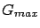

Siguiente: Ángulos relativos a la
Subir: Algoritmos y cálculos implementados
Anterior: Cómputo de distancia
Índice General
Cálculo de ganancia de la antena trasmisora
La ganancia de la antena trasmisora variará de acuerdo a la
dirección en donde se encuentre el receptor, salvo el caso en que la
antena sea isotrópica. El valor de la ganancia (en dB) en la
dirección
relativa a la dirección de máxima
propagación es:
donde y son ganancias (negativas) relativas a la máxima
 y se obtienen de los patrones de radiación horizontal y
vertical respectivamente.
Subsecciones
SAPO